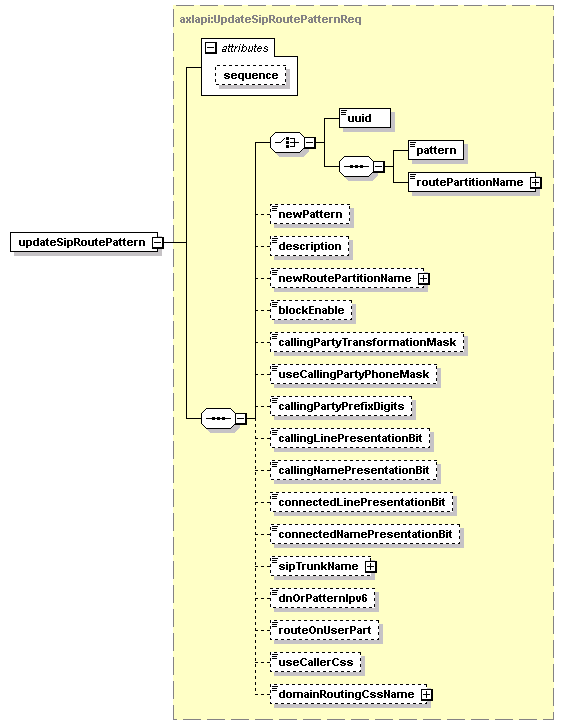

| diagram |  | ||||||||||||
| namespace | http://www.cisco.com/AXL/API/10.5 | ||||||||||||
| type | axlapi:UpdateSipRoutePatternReq | ||||||||||||
| properties |
|
||||||||||||
| children | uuid pattern routePartitionName newPattern description newRoutePartitionName blockEnable callingPartyTransformationMask useCallingPartyPhoneMask callingPartyPrefixDigits callingLinePresentationBit callingNamePresentationBit connectedLinePresentationBit connectedNamePresentationBit sipTrunkName dnOrPatternIpv6 routeOnUserPart useCallerCss domainRoutingCssName | ||||||||||||
| attributes |
|
||||||||||||
| source | <xsd:element name="updateSipRoutePattern" type="axlapi:UpdateSipRoutePatternReq"/> |